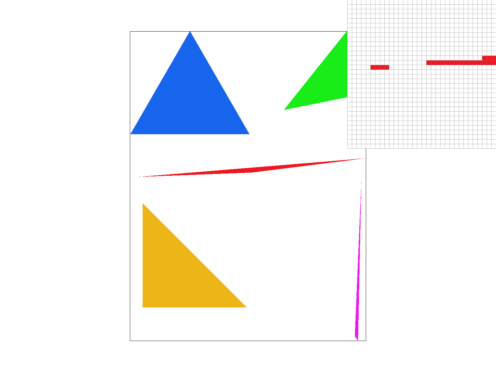
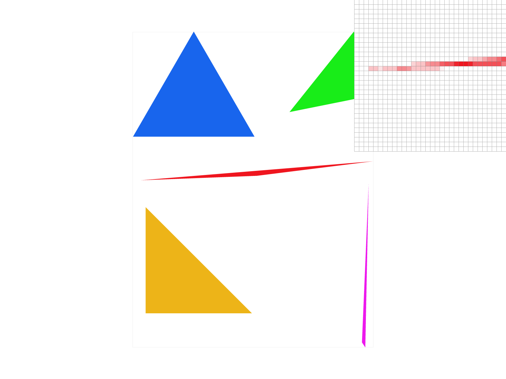
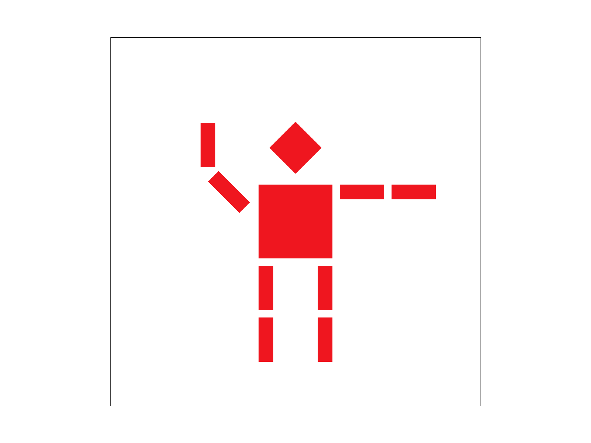
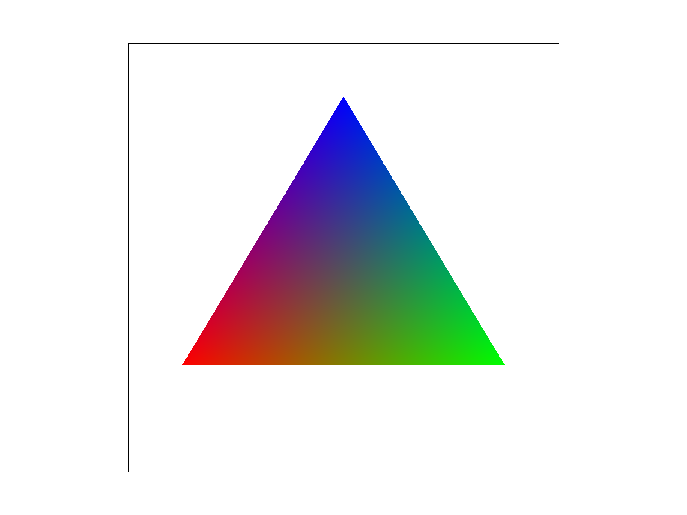
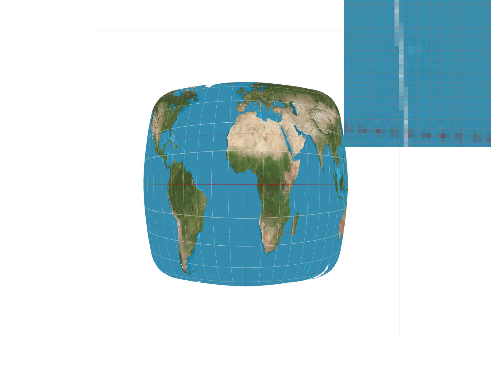
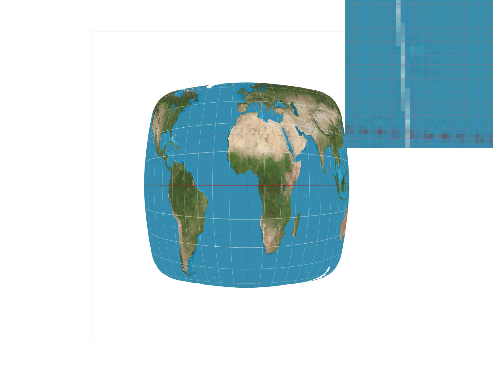
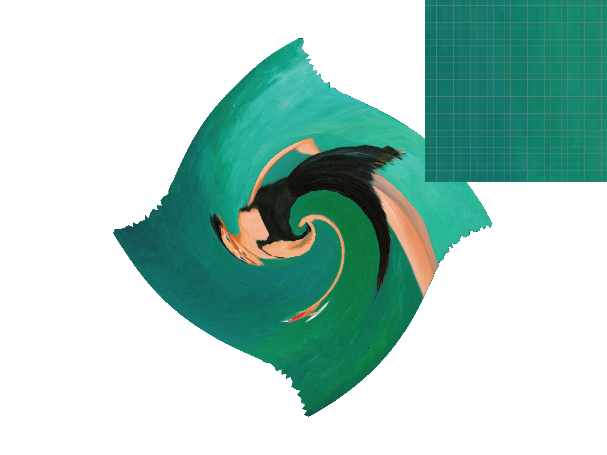

Overview
We found implementing the rasterization to be interesting because it was fairly straightforward to implement the normal rasterization (no super sampling) with the bounding rectangles which already is a fairly good baseline in terms of efficiency/correctness. Similarly, for that part, we found ourselves being able to concretely visualize the lecture slides and we oftentimes swapped between looking at the slides and coding to make sure we internalized the process.
The middle part of the project (transformations, barycentric coordinates, and pixel sampling) we found were a direct reflection of the proofs/equations directly covered in lecture and we found that while understanding why these transformations work is not really tested in the project, since you just need to code the final formula result, it was still rewarding to be able to understand since we did have a few typos in our code. However, because we understood how the implementation should work, debugging was easy. Of particular note, bugs such as messing up the degrees to radians, using wrong signs, etc. were easily found within a few minutes.
The last part of the project at a high level was to implement pixel and level sampling and we were able to implement it with the help of some of the functions we implemented in task 5. We found this part to be the most challenging part of the project because we had a lot of small bugs that made our final output look really different: things such as not using the width at a particular level, not using floor/ceiling correctly, etc. After we finished implementing this we were able to observe the difference in how pixel//level sampling affected anti-aliasing
Overall, this project was really rewarding to truly bridge the gap between the conceptual formulas/topics we learned in lecture and concrete coding techniques used to improve graphical visualization. Our personal favorite part of the project was being able to fully visualize the improvements as we finished the tasks. However, it was sometimes difficult to wrap our heads around the different variables with similar names like ‘width’ and ‘height’.
Task 1
- Walk through how you rasterize triangles in your own words.
We first calculate the bounding box of the triangle by computing the min and max x and y coordinates. Then we iterate through every sample within the bounding box and, using the center of each pixel, we calculate a line test for each of the three sides of the triangle to determine which side of the line the sample point lies. If the sample is within the triangle, we set that pixel in the frame buffer to the specified color. We also need to account for the fact that the winding order of the triangle can be either clockwise or counter-clockwise.
- Explain how your algorithm is no worse than one that checks each sample within the bounding box of the triangle.
We only evaluate samples within the bounding box of the triangle by limiting our search to samples in the range (minX, maxX) and (minY, maxY).
- Show a png screenshot of basic/test4.svg with the default viewing parameters and with the pixel inspector centered on an interesting part of the scene.

Task 2
- Walk through your supersampling algorithm and data structures. Why is supersampling useful? What modifications did you make to the rasterization pipeline in the process? Explain how you used supersampling to antialias your triangles.
To implement supersampling, we divide each pixel into a NxN grid where N^2 is the supersampling rate. This means that the sample buffer has size (W*N)x(H*N), where WxH is the size of the frame buffer. We first perform sampling at this supersampled resolution, filling the sample buffer with the color of the triangle if the sample lies within the triangle. Then, for each screen pixel we average down the NxN supersamples to get a single color value for the pixel, and put this value into the frame buffer to be rendered to the screen.
Supersampling is useful because it allows us to increase the sampling frequency and thereby antialias sampling artifacts.
- Show png screenshots of basic/test4.svg with the default viewing parameters and sample rates 1, 4, and 16 to compare them side-by-side. Position the pixel inspector over an area that showcases the effect dramatically; for example, a very skinny triangle corner. Explain why these results are observed.
Sample Rate of 16:
- Going over the results from the images above, the images with lower sample rates look more blocky and have gaps, but as we increase the sampling rate the “empty” space in between gets converted to a lighter red color that makes the transition from white to red look more uniform and less drastic. These “jaggies” are present at a sampling rate of 1 because a computer unlike the real world has images that are split into pixel units and because of this it is hard to depict a straight line as a collection of pixels (the pixels are either red or white no in between). By supersampling, we correct this issue by taking averages of the subpixels and smoothen out the jaggies by having intermediate pixels take on lighter colors to ease the transition, which is what we see in the image above.
Task 3
- Create an updated version of svg/transforms/robot.svg with cubeman doing something more interesting, like waving or running. Feel free to change his colors or proportions to suit your creativity. Save your svg file as my_robot.svg in your docs/ directory and show a png screenshot of your rendered drawing in your write-up. Explain what you were trying to do with cubeman in words.

We made cubeman raise his right arm to wave. To do this we rotated his right arm and then rotated and translated his right lower arm.
Task 4
- Explain barycentric coordinates in your own words and use an image to aid you in your explanation. One idea is to use a svg file that plots a single triangle with one red, one green, and one blue vertex, which should produce a smoothly blended color triangle.
- At a high level, Barycentric coordinates are a coordinate system that allow us to easily work with triangles as we can easily tell with Barycentric coordinates if a point is inside or outside the triangle. Any point inside the triangle can be expressed as a weighted sum of the three vertices of the triangle, and these are equal to the three barycentric coordinates. For instance, the point at the center of the triangle would have barycentric coordinates (⅓, ⅓, ⅓), which corresponds to the fact that the color at that point is a mix of ⅓ red, ⅓ green, and ⅓ blue.

- Show a png screenshot of svg/basic/test7.svg with default viewing parameters and sample rate 1. If you make any additional images with color gradients, include them.

Task 5
- Explain pixel sampling in your own words and describe how you implemented it to perform texture mapping. Briefly discuss the two different pixel sampling methods, nearest and bilinear.
- Pixel sampling is the process of finding where the pixel maps to in texture space and then using a sampling method such as nearest or bilinear to find the particular color at that pixel. Nearest will simply take the color of the nearest pixel, while bilinear will be a weighted linear combination of the 4 closest pixels. The two methods are discussed in more detail below.
- Nearest pixel sampling is when the current sample pixel takes on the color of the texel that is closest to its corresponding location in texture space. This would make the picture look more pixelated in return since there won’t be a smooth transition in colors.
- Bilinear pixel sampling is when the current sample pixel takes on the color resulting from a calculation of the 4 closest texels combined in a weighted linear combination. The result would make the image appear more “smooth”.
- Check out the svg files in the svg/texmap/ directory. Use the pixel inspector to find a good example of where bilinear sampling clearly defeats nearest sampling. Show and compare four png screenshots using nearest sampling at 1 sample per pixel, nearest sampling at 16 samples per pixel, bilinear sampling at 1 sample per pixel, and bilinear sampling at 16 samples per pixel.
 

- Comment on the relative differences. Discuss when there will be a large difference between the two methods and why.
- There will be a large difference between the two methods Nearest sampling with sample rate 1 (IMAGE 1 above) and Bilinear sampling with sample rate 1 (IMAGE 2 above) in areas where anti-aliasing occurs. This is because Nearest sampling will simply result in the color of the nearest pixel being chosen, while bilinear sampling will cause the image to look smoother because the color chosen is now a weighted linear combination of the four closest pixels. Moreover, the sample rate of 1 signifies that we are not supersampling and this is significant because supersampling would get rid of the aliasing but since the sample rate is 1 for both Image 1 and Image 2 we can clearly see the effects of nearest vs bilinear sampling
- On the flip side, although there is a discernible difference between nearest sampling with rate 16 (Image 3 above) and bilinear sampling with rate 16 (Image 4 above) the difference is definitely not as drastic as the difference between Image 1 and Image 2. This is because we are already supersampling which partially already gets rid of some of the aliasing so the change from nearest to bilinear does not result in an as big relative change, making it appears less noticeable to us.
Task 6
- Explain level sampling in your own words and describe how you implemented it for texture mapping.
- Level sampling is when you pre-compute several increasingly lower resolution versions of the original texture (mipmaps) and sample different pixels from different mipmaps. Parts of the texture image that take up large areas in screen space are sampled from the original high-resolution texture, while large parts of the texture image that are mapped onto small areas in screen space are sampled from high level mipmaps (low resolution). This is done because if we just always sample from the high-resolution original texture image then we will observe aliasing in areas where the texture has been minified and the sampling frequency is too low for the high resolution texture image.
- We implemented level sampling for texture mapping by computing the best mipmap level for each sample point by calculating the area in texture space it covers. Samples that get mapped to large areas of the texture image are sampled from high level mipmaps (low resolution), while samples that take up only small parts of the texture image are sampled from low level mipmaps (high resolution).
- You can now adjust your sampling technique by selecting pixel sampling, level sampling, or the number of samples per pixel. Describe the tradeoffs between speed, memory usage, and antialiasing power between the three various techniques.
- Supersampling will result in a high quality antialiased image but it can be very expensive because the level of supersampling required may be very high. For instance it might be the case that you need to apply 512x supersampling, which requires 512 times the computation. Level sampling with mipmaps will achieve a good result (with some limitations), and it is much more computationally efficient because the mipmaps are pre-computed. However, because of this reason, it does require additional memory usage to store the mipmaps, but because they are increasingly lower resolution compared to the original texture image, the memory overhead is not that large relative to the antialiasing power. Pixel sampling is less costly but also has less antialiasing power.
- Using a png file you find yourself, show us four versions of the image, using the combinations of L_ZERO and P_NEAREST, L_ZERO and P_LINEAR, L_NEAREST and P_NEAREST, as well as L_NEAREST and P_LINEAR.
- To use your own png, make a copy of one of the existing svg files in svg/texmap/ (or create your own modelled after one of the provided svg files). Then, near the top of the file, change the texture filename to point to your own png. From there, you can run ./draw and pass in that svg file to render it and then save a screenshot of your results.
- Note: Choose a png that showcases the different sampling effects well. You may also want to zoom in/out, use the pixel inspector, etc. to demonstrate the differences.
